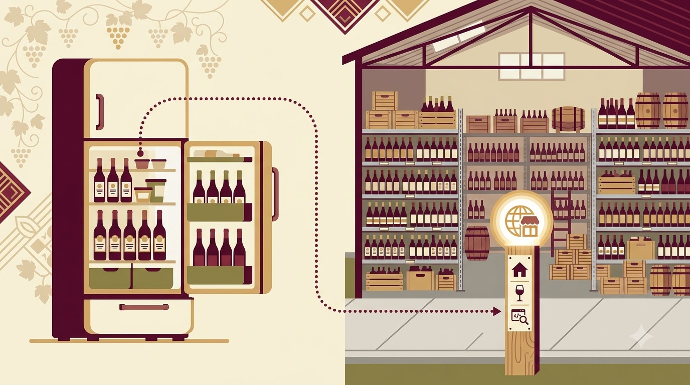
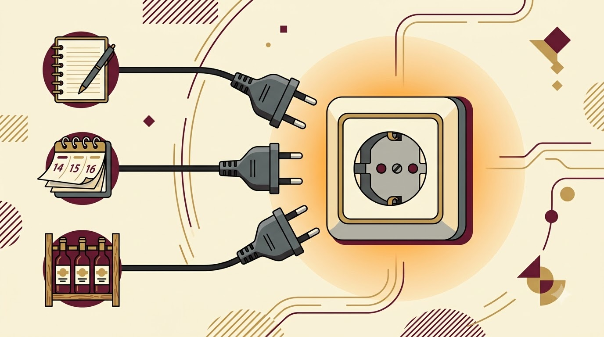

와인스쿨 · 2시간 실습
Claude + Supabase · 말로 만드는 표, 말로 묻는 기록
Contents
들어가기 전에…
지난달 마신 와인, 이름과 점수는 어디에?
메모장 · 사진첩 · 기억 — 다시 찾을 수 있는 곳?
학습 목표
데이터베이스 = 잘 정리된 표라는 이해
Supabase = 주소가 있는 표 보관소
MCP = 도구를 꽂는 공통 규격
Claude 앱에 Supabase 연결
말로 표 생성 · 와인 기록 5건 저장 · 말로 조회
최종 결과물: 내 계정 안의 와인 노트 표 1개
실습 규칙모르는 화면 = 손 들기 · 옆자리와 화면 공유 허용 · 비밀번호는 종이에
사전 준비 · 시작 전 확인
claude.ai 계정 로그인 완료 · 앱 설치 완료 (설치 안내문 별도 배포)
supabase.com 가입 · 이메일 인증 완료 · 로그인 상태
프로젝트 비밀번호 기록용 · 화면 밖에 보관
강사미완료자는 보조강사 배정 · 10분 안에 정리 · 그 사이 01 진행
01
표 · 데이터베이스 · Supabase · MCP
0:15 – 0:50 35분
1-1 · 개념
창밖에서 레시피 불러주는 사람 · 답만 생성 · 저장·실행은 사람 몫 · 대화창 종료 = 소멸
주방에 들어와 요리하는 사람 · 직접 만들고 저장하고 조회 · 실패 시 재시도
Claude 데스크톱 앱 · 도구(MCP) 연결 시 에이전트
연결 필요 · 설치 아닌 로그인 허용 1회
핵심에이전트 = 결과가 남는 AI
1-2 · 개념
| 관점 | 엑셀 · 메모장 | 데이터베이스 |
|---|---|---|
| 구조 | 칸마다 자유 입력 | 열마다 종류 고정 (날짜 · 숫자 · 글) |
| 중복 | 같은 와인 세 번 입력 가능 | 규칙으로 차단 |
| 질문 | 눈으로 찾기 · 필터 | "90점 이상 프랑스 와인" → 즉시 목록 |
| 동시 사용 | 파일 1개 · 한 사람 | 여러 기기 · 여러 사람 |
| 위치 | 내 컴퓨터 | 주소(URL)가 있는 곳 |
용어표 = 테이블 · 가로줄 = 행(1건) · 세로줄 = 열(항목)
1-3 · 개념

비유로컬 = 우리 집 냉장고 · URL = 배민에 등록된 가게 주소
1-4 · 개념

핵심규격 하나 = 도구 무한 · 배움 1회
1-5 · 비교
| 관점 | MCP 없이 (챗봇) | MCP 있을 때 (에이전트) |
|---|---|---|
| 표 만들기 | AI가 설명문 작성 → 사람이 화면에서 클릭 | AI가 직접 생성 |
| 기록 저장 | 복사 · 붙여넣기 반복 | 말 한 줄 → 저장 완료 |
| 질문 | 화면 열고 눈으로 확인 | "지난달 90점 이상" → 목록 답변 |
| 실패 시 | 사람이 원인 추적 | 오류 읽고 재시도 |
| 기억 | 대화창 종료 = 소멸 | 표에 남음 · 내일도 동일 |
1-6 · 순서
"와인 노트 표 만들기"
에이전트 · 계획 수립
공통 규격 · 도구 호출
표 생성 · 저장 · 조회
원칙사람 = 주문과 검수 · 에이전트 = 실행 · Supabase = 보관
01 정리
휴식 10분 · 1:00 시작 · 다음 02 연습 · 미완료 사전 준비 = 휴식 중 보조강사
02
연결 → 표 만들기 → 기록 → 질문
1:00 – 1:45 45분
연습 단계 1 10분
프로젝트 화면 상단 초록 점 · 이름 wine-notes · 비밀번호 종이 보관
왼쪽 메뉴 Table Editor 클릭 시 빈 화면 = 정상
10분 엄수 · 미완료자 = 옆자리 화면 공유로 진행
연습 단계 2 10분
커넥터 목록에 Supabase 연결됨 · 대화창 도구 아이콘에 Supabase
> 지금 연결된 Supabase 프로젝트 이름 알려줘 → "wine-notes" 답변
허용 화면에서 멈추는 수강생 다수 예상 · 화면 크게 띄우고 같이 클릭
2-3 · 인수인계 문서
# Claude 앱 → 프로젝트 "와인 노트" → 지침에 붙여넣기 역할 나의 와인 노트 관리 도우미. Supabase 프로젝트 wine-notes만 사용. 표 규칙 wines(이름, 나라, 품종, 빈티지, 점수 1~100, 메모, 마신 날짜) 말투 존댓말 · 한 번에 한 가지 질문 · 실행 전 요약 1줄 · 실행 후 결과 표 합격 조건 1. 저장 후 반드시 저장된 행을 다시 보여줄 것 2. 표를 지우거나 열을 바꾸기 전에는 반드시 확인 질문 3. 점수는 1~100 사이 숫자만 허용
핵심프롬프트 = 매번 하는 주문 · 지침 = 한 번 붙이는 인수인계 문서
연습 단계 3 15분
열 7개 · 행 5개 · 점수 열 전부 숫자 · 대시보드와 Claude 답변 일치
저장 후 Claude가 행을 다시 보여주는지 (지침 합격 조건 1)
표 생성 완료자부터 기록 진행 · 10분 시점 전체 화면 점검
연습 단계 4 10분
1·2 답변이 대시보드 실제 값과 일치 · 3에서 수정 전 요약 1줄 출력
Claude가 실행한 SQL 펼쳐 보기 = 주방 CCTV
답이 틀린 사례 1건 화면 공유 → 2-6으로 연결
2-6 · 실패 유형과 처방
| 증상 | 원인 | 처방 |
|---|---|---|
| 도구 목록에 Supabase 없음 | 허용 화면 미완료 · 다른 계정 로그인 | 커넥터 삭제 → 재연결 · 로그인 계정 확인 |
| "권한 없음" 오류 | 읽기 전용 모드 · 프로젝트 미선택 | 커넥터 설정에서 프로젝트 wine-notes 선택 |
| 점수 열에 "88점" 글자 저장 | 지침 미적용 · 새 대화가 프로젝트 밖 | 프로젝트 안에서 새 대화 · 지침 붙여넣기 확인 |
| 같은 와인 2행 | 중복 규칙 없음 | > 이름+빈티지 중복 저장 금지 규칙 추가해줘 |
원칙오류 문구 = 주방 CCTV · 읽고 그대로 Claude에 붙여넣기
2-7 · 검수 게이트
02 정리
휴식 없음 · 1:45 시작 · 다음 03 정리 · 표 미완성자 = Q&A 중 개별 처리
03
한 문장 · 다음 단계 · 안전 · Q&A
1:45 – 2:00 15분
2번에 시간 쓰면 3번이 짧아지고,
4~6 돌면 7이 나오고, 7 있으면 8은 공짜.
2 완성 사진·지침 · 3 주문(프롬프트) · 4~6 오류 보기·수정·반복 · 7 규칙을 파일로(스킬) · 8 반복 작업 자동화
3-2 · 확장
오늘 지침 → 스킬 파일 · 가족·동호회에 복사 1회로 전달
구글 캘린더 = 시음회 일정 · Gmail = 와인샵 영수증 → 같은 표에 저장
wines 옆에 shops(구매처) · tastings(시음회) · 표끼리 연결
다음 과제집에서 기록 10건 추가 · "올해 최고 점수 와인 3개" 질문 → 결과 화면 캡처 제출
3-3 · 안전
대화창 입력 금지 · 종이 보관 · 커넥터는 로그인 허용으로만
타인 이름·연락처는 표에 저장 금지 · 내 기록만
조회만 필요할 때 커넥터 read-only 설정 · 삭제 사고 방지
지우기·바꾸기 전 확인 = 지침 합격 조건 2 · 없으면 지침 재점검
원칙에이전트의 손이 닿는 범위 = 허용한 프로젝트 하나
Q&A
seongho.cho@kodekorea.kr · kodekorea.kr
미해결 질문 → 후속 자료로 회신
정리 · 학습 목표 대응
데이터베이스 = 규칙 있는 표 · Supabase = 주소 있는 보관소 · MCP = 220V 규격
내 계정의 wines 표 1개 · 기록 5건 · 조회·집계·수정 성공
대화 = 소멸 · 지침 = 프로젝트에 잔류 · 표 = Supabase에 영구
하네스연결 → 완성 사진 → 지침 → 주문 → 합격 조건 → 오류·수정 루프 → 규칙 파일 → 반복 자동화 → 샘플 검수
마무리
조성호 · KODE KOREA(코드코리아)
seongho.cho@kodekorea.kr · kodekorea.kr · github.com/shain1912
후속 자료: 설치 안내문 · 프로젝트 지침 텍스트 · 프롬프트 모음 · 예시 와인 목록 10건 · 이 슬라이드 링크